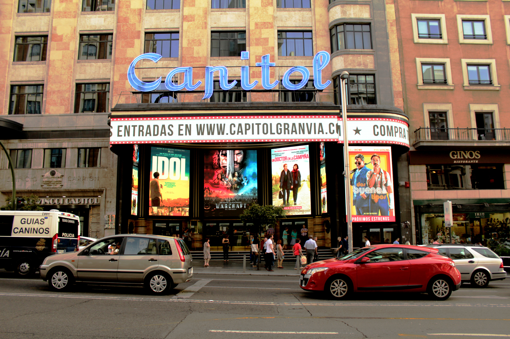

La odisea de las subvenciones al cine español
► Durante los últimos siete años las ayudas al cine español han caído un 44%.
► Los cineastas reclaman mayor presupuesto para el cine español: "La dotación es ridícula".
► La Nueva Ley del Cine introduce las ayudas anticipadas a la producción. Hasta ahora el sistema funcionaba con las subvenciones a la amortización, que se entregaban dos años después del estreno de la película.
En Lo Imposible, la película más taquillera de la historia del cine español, un tsunami arrasa la costa del sur de Tailandia llevándose todo a su paso. Es entonces cuando empieza la odisea de los protagonistas: primero, para sobrevivir y segundo para encontrarse los unos a los otros. En España hace ya más de un lustro pasó algo parecido. No fue ni mucho menos el mar lo que se llevó todo a su paso, sino una severa crisis que trajo consigo un oleaje de recortes que afectaron a numerosas industrias, entre ellas la del cine.
Desde 2009, las ayudas al sector cinematográfico han descendido hasta un 44%. Una reducción en la partida que también se ha visto afectada en el número de películas a las que se les conceden las subvenciones. Y es que la media de cintas que gozan ahora de estas ayudas ha caído a más de la mitad. Durante 2009, 2010 y 2011, alrededor de 96 películas obtuvieron cada año la financiación del Ministerio de Cultura. Los cuatros años siguientes esa cifra cayó a 56.
"El problema está en la dotación, no en el sistema"
“Las ayudas públicas son absolutamente necesarias para ser competitivos en un entorno internacional. La partida de los Presupuestos Generales del Estado que va al cine estará en un cero coma algo”, asegura Manuel Cristóbal, productor de películas como El Lince Perdido, ganadora de un Goya a la mejor cinta de animación o de Arrugas, largometraje que se alzó también con dos cabezones: a mejor filme de animación y mejor guión adaptado. “El problema está en la dotación, no en el sistema”, sentencia Cristóbal.
La partida de Presupuestos al Cine durante los últimos años

Las subvenciones a las películas se conceden a través del Instituto de la Cinematografía y las Artes Audiovisuales (ICAA), organismo dependiente del Ministerio de Cultura. Durante estos últimos siete años, el porcentaje más grande de ayudas ha ido a parar a la amortización. Es decir, se conceden las subvenciones dos años después de haber sido estrenadas. Este apartado se divide además en ayudas generales y complementarias. Entre ambas secciones el máximo fijado para cada cinta es de 1,5 millones de euros. Cifra que se fijó en la Orden de 2009 y que en algunos casos extraordinarios ha alcanzado los 2 millones de euros.
La nueva Ley del Cine, que entró en vigor el 1 de enero de este año, ha reducido ese importe máximo hasta los 1,4 millones. Una leve bajada que a ojos de Finocha Fomoso, productora de importantes series de Mediaset como Periodistas o Al salir de clase, dificulta todavía más el recorrido de los productores independientes: “Si ahora además de apoyar a un tipo de productor consagrado y cercano a los medios, se les quita presupuesto… pues no va a ir bien el sistema audiovisual”.
Un 6% se llevaron el importe máximo
En estos últimos siete años del total de 513 películas que gozaron de la subvención del ICAA, únicamente 33 recibieron el 100% del importe máximo de la ayuda. De esas, una quincena obtuvieron la subvención máxima de un millón de euros, acogidas todavía a la ley de 2007, cuando el importe estaba fijado en esa cantidad. El resto, ingresaron la cuantía total de entre 1,5 y 2 millones de euros. Mientras tanto, al otro lado de la balanza se encuentran hasta 155 filmes que han recibido entre el 0,01% y el 10% del importe máximo posible.
Todo esto es lo que ocurría en esos años en los que el tsunami de la crisis golpeaba con fuerza a España, y el sector de la cultura en general, y del cine en particular fue uno de los más dañados. José Nolla, miembro de la Junta Directiva de la Unión de Cineastas y productor de más de una decena de largometrajes como Sexo fácil, películas triste o 25 Kilates, explica así la situación de la recesión desde dentro de la industria del cine: “Provocó una reducción drástica en el crédito privado, así que los productores tuvieron que adelantar unos fondos que recibirían unos años más tarde. El resultado de todo esto fue una reducción brutal de la dotación presupuestaria que no cubría la totalidad de las deudas con los productores”.
 Cines Capitol de Gran Vía (Madrid) | Sandra Sánchez Merinero.2013, el hundimiento
Uno de los años más negros para la historia de nuestro cine ha sido 2013. Entonces, tan sólo 33 películas obtuvieron la subvención del Ministerio de Cultura. Fueron, sin duda, las supervivientes en un año en el que el presupuesto que se fijó para el cine se hundió hasta los 33.846.000 euros. Precisamente, un importe similar se ha fijado para este año. Cantidad que Manuel Cristóbal define como "ridícula"
Aquel 2013 no sólo hubo menos dotación a las ayudas, sino que la recaudación bajó hasta los 70 millones de euros. Por poner un ejemplo, en 2012 se recaudaron 119 millones y en 2014, las arcas llegaron a sumar hasta 131. En ese año se estrenaron cintas como 15 años y un día (Gracia Quejereta), nominada a 7 Premios Goya, incluyendo mejor película, Las brujas de Zugarramurdi (Álex de la Iglesia), ganadora de 8 cabezones o Los Amantes pasajeros, de Pedro Almodóvar. Tres películas que, por cierto, se encuentran entre las cintas que más ayuda han recibido durante los últimos años.
"Las ayudas a la amortización eran un sistema justo que evitaba los personalismos de los años anteriores"
La inversión realizada por el productor y sobre todo la recaudación en taquilla son los dos aspectos fundamentales que el ICAA tenía en cuenta a la hora de dar más o menos ayuda. Un sistema que tanto para Cristóbal como para José Nolla era “completamente objetivo, automático y justo” ya que, según detallan, evitaba “los personalismos” a la hora de conceder las ayudas.
Pese a todo, las tres películas más taquilleras de estos últimos siete años (Lo Imposible, El Orfanato y Agora) no han sido las que más subvención han recibido, aunque sí que se encuentran dentro del ránking que muestra las 100 cintas con más dotación de los últimos años. En este sentido, el puesto número uno lo ocupa Tres metros sobre el cielo, el único largometraje que ha conseguido la subvención total de 2 millones de euros.
Las 100 películas que más dinero y espectadores han manejado

Lo mismo ocurre con los filmes con mayor presupuesto. Resulta especialmente llamativo este aapartado, pues aquí son dos largometrajes los que destacan y mucho, por encima del resto: Agora con 51 millones de presupuesto y Lo Imposible con 31 millones. El resto de largometrajes realizados durante los últimos años no llegan ni a los 15 millones de presupuesto. Además, la ayuda entre ambas películas no llega ni a los dos millones que sí obtuvo Tres metros sobre el cielo.
Cines Dore, sala de exhibiciones de la Filmoteca Española | Sandra Sánchez Merinero.¿Pero cuál era el principal problema de este sistema? Que “estas ayudas a la amortización se habían convertido en un sistema fraudulento donde los productores falseaban los datos en taquilla”, explica Fomoso.
"Las ayudas a la amortización terminaron convirtiéndose en un sistema fraudulento"
“Se generaron una serie de prácticas que no eran buenas y que contribuyeron a pervertir el modelo. Si no se podían cumplir algunos requisitos y de ese cumplimiento dependía la obtención de la ayuda, pues se forzaba la ley o al menos su espíritu”, agrega Nolla.
Las televisiones como salvavidas
Si algo ha aumentado durante estos últimos años ha sido la participación de las televisiones en los proyectos cinematográficos. Una práctica que ha facilitado en gran parte a los productores a la hora de obtener la financiación necesaria para la obtención de la ayuda. Así, de las 100 películas que más subvención han obtenido durante estos últimos 7 años, un 89% han contado con la participación o la producción de TVE, Antena 3 Films, Telecinco Cinema o TV3.
Una práctica que se verá todavía más acentuada con la Nueva Ley del Cine que exige que un 35% de la cinta ya esté financiada. Un aspecto que, por el momento, mantiene dividido a los cineastas. Finocha Fomoso sostiene que ahora “se va a hacer el cine que quieren los canales de televisión y si les funciona una película se verán secuales hasta el infito. No arriesgar es su lema". Este sistema además -añade Fomoso- perjudicará a los productores independientes: “Si el cine independiente sobrevive será gracias al ingenio de los productores, pero va a ser un cine precario y escaso”.
Por otro lado, Manuel Cristóbal, a quien TVE le compró la cinta de Arrugas, sostiene que “lo que no se puede hacer es pretender que te den dinero, sin tú tener nada". "Hacer una cinta con sólo lo que te da el Ministerio es hacer un flaco favor al cine de este país”, concluye.